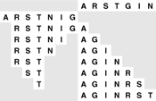

C++ Programming Robert Sedgewick - Princeton University Addison Wesley Professional Algorithms in C++, Parts 1–4: Fundamentals, Data Structure, Sorting, Searching, Third Edition
8.2. Abstract In-Place Merge
Although implementing a merge seems to require extra space, we still find the abstraction of an in-place merge useful in the implementations of sorting methods that we examine here. In our next implementation of merging, we shall emphasize this point by using the interface merge(a, l, m, r) to indicate that the merge subroutine will put the result of merging a[l], ..., a[m] and a[m+1], ..., a[r] into a single ordered file, leaving the result in a[l], ..., a[r]. We could implement this merge routine by first copying everything to an auxiliary array and then using the basic method of Program 8.1; instead we shall consider an improvement to that approach. Although the extra space for the auxiliary array seems to be a fixed practical cost, we shall consider in Section 8.4 further improvements that allow us to avoid the the extra time required to copy the array.
The second characteristic of the basic merge that is worthy of note is that the inner loop includes two tests to determine whether the ends of the two input arrays have been reached. Of course, these two tests usually fail, and the situation thus cries out for the use of sentinel keys to allow the tests to be removed. That is, if elements with a key value larger than those of all the other keys are added to the ends of the a and aux arrays, the tests can be removed, because, when the a (b) array is exhausted, the sentinel causes the next elements for the c array to be taken from the b (a) array until the merge is complete.
As we saw in Chapters 6 and 7, however, it is not always easy to use sentinels, either because it might not be easy to know the largest key value or because space might not be available conveniently. For merging, there is a simple remedy, which is illustrated in Figure 8.1. The method is based on the following idea: Given that we are resigned to copying the arrays to implement the in-place abstraction, we simply put the second array in reverse order when it is copied (at no extra cost), so that its associated pointer moves from right to left. This arrangement leads to the largest element—in whichever array it is—serving as sentinel for the other array. Program 8.2 is an efficient implementation of the abstract in-place merge based on this idea; it serves as the basis for the sorting algorithms that we discuss later in this chapter. It still uses an auxiliary array of size proportional to the merge output, but it is more efficient than the straightforward implementation because it avoids the tests for the ends of the arrays.
To merge two ascending files, we copy into an auxiliary array, with the second file in reverse order immediately following the first. Then, we follow thIs simple rule: Move the left or right item, whichever has the smaller key, to the output. The largest key serves as a sentinel for the other file, no matter in which file the key is. This figure illustrates how the files A R S T and G I N are merged.

Program 8.2. Abstract in-place merge|
This program merges without using sentinels by copying the second array into aux in reverse order back to back with the first (putting aux in bitonic order). The first for loop moves the first array and leaves i pointing to l, ready to begin the merge. The second for loop moves the second array, and leaves j pointing to r. Then, in the merge (the third for loop), the largest element serves as the sentinel in whichever array it is. The inner loop of this program is short (move to aux, compare, move back to a, increment i or j, increment and test k).
template <class Item>
void merge(Item a[], int l, int m, int r)
{ int i, j;
static Item aux[maxN];
for (i = m+1; i > l; i--) aux[i-1] = a[i-1];
for (j = m; j < r; j++) aux[r+m-j] = a[j+1];
for (int k = l; k <= r; k++)
if (aux[j] < aux[i])
a[k] = aux[j--]; else a[k] = aux[i++];
}
|
A sequence of keys that increases, then decreases (or decreases, then increases) is referred to as a bitonic sequence. Sorting bitonic sequences is equivalent to merging, but it is sometimes convenient to cast a merging problem as a bitonic sorting problem; this method of avoiding sentinel tests is a simple example.
An important property of Program 8.1 is that the merge is stable: It preserves the relative order of duplicate keys. This characteristic is easy to verify, and it is often worth making sure that stability is maintained when we implement an abstract in-place merge, because a stable merge leads immediately to stable sorting methods, as we shall see in Section 8.3. It is not always easy to maintain stability: for example, Program 8.1 is not stable (see Exercise 8.6). This consideration further complicates the problem of developing a true in-place merge.
Exercises |  8.5 Show how the keys AEQSUYEINOST are merged using Program 8.2, in the style of the example diagrammed in Figure 8.1. 8.5 Show how the keys AEQSUYEINOST are merged using Program 8.2, in the style of the example diagrammed in Figure 8.1.
| | 8.6 Explain why Program 8.2 is not stable, and develop a version that is stable. | | 8.7 What is the result when Program 8.2 is used for the keys E A S Y Q U E S T I O N? | | 8.8 Does Program 8.2 produce proper output if and only if the two input subarrays are in sorted order? Prove your answer, or provide a counterexample. |
|